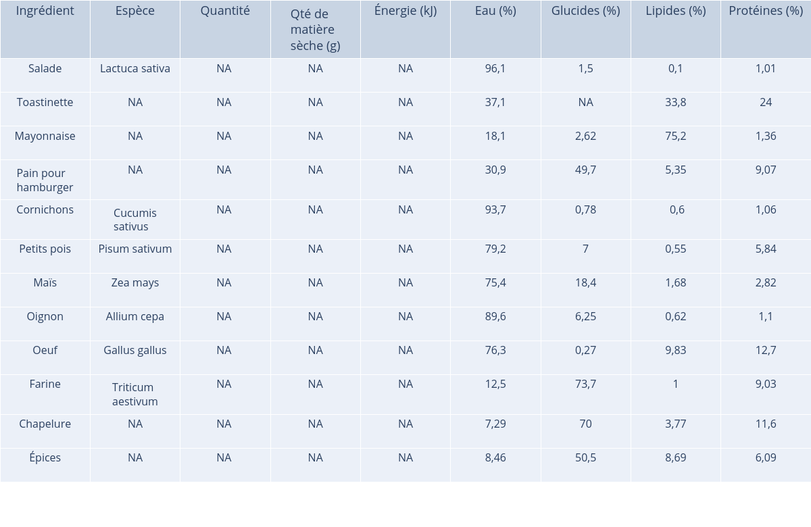

Name of the recipe: Hamburger Végétarien
URL of the recipe: https://www.marmiton.org/recettes/recette_hamburger-vegetarien_19445.aspx
Number of ingredients: 12
Number of specie found for the ingredients: 7
Ingredients that haven't match with a species: Toastinette, Mayonnaise, Pain pour hamburger, Chapelure, Épices
Phylogenetic diversity: 204.67
Weighted phylogenetic diversity: NA
Shannon's index: NA
Simpson's index: NA